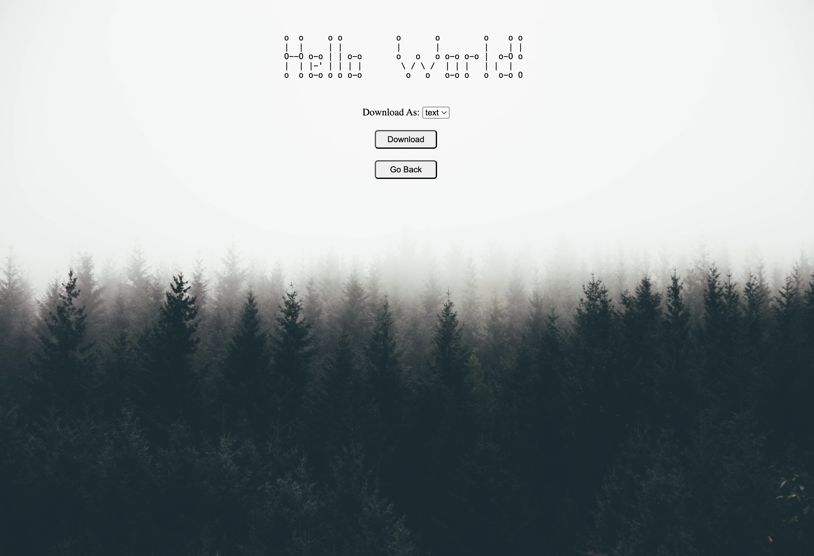
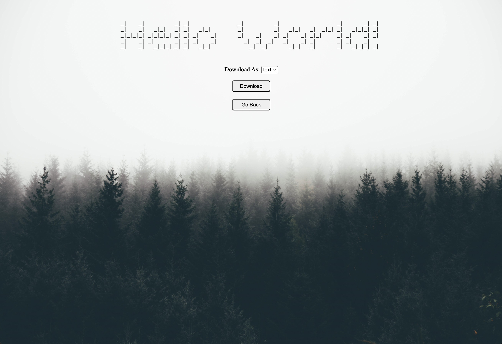

Transform your plain text into eye-catching ASCII art with ASCII Text Converter,
an efficient app built with Go (Golang). Convert text effortlessly, choose from a variety of styles,
and download your creations with ease.
Features:
Features:
- Text to ASCII Conversion: Instantly convert regular text into ASCII art.
- Style Selection: Choose from multiple text styles to fit your needs.
- Download Results: Save your ASCII art as a text file or zip. Experience the speed and reliability of Go while creating unique ASCII representations of your text. Perfect for designers, developers, and anyone looking to add a creative touch to their words.